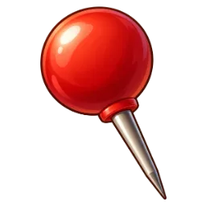

A Тёмное пламя
Языки сине-фиолетового пламени срываются с краёв силуэта и тянутся вверх. Глаза горят и оставляют короткий след, когда моб идёт.

TIREDWOOD · крепость · 01.11
Элита стала крупнее в 1,25 раза, чемпион — в 1,5 раза и с короной. Кольца вокруг пояса больше нет: светится сама модель. Три варианта ауры — выбери один и цвет.
Пламя A, но у золотого — светлое, почти белое ядро; контур тела светится, глаза горят, искры летят вверх. Так аура чемпиона не путается с поджогом от жаровни. Элита — сине-фиолетовая, чемпион — золотой.
Языки сине-фиолетового пламени срываются с краёв силуэта и тянутся вверх. Глаза горят и оставляют короткий след, когда моб идёт.
Тёмный дым стекает с тела и тянется шлейфом, край дыма и силуэта светится. Медленнее и тяжелее, тело чуть темнее.
Яркий светящийся контур по краю модели и искры, которые поднимаются от тела. Чище всех, лучше всех читается издалека.
По рангу: элита — сине-фиолетовая, чемпион — золотисто-оранжевый. Один цвет: у всех фиолетовая, чемпион ярче и выше.
Все ауры в кадре — одна отрисовка и одна программа: контур — в материале мобов, пламя, дым и искры — один набор частиц. Без ламп и размытия.
Буква и цвет, например: «A, по рангу» или «C, один цвет».